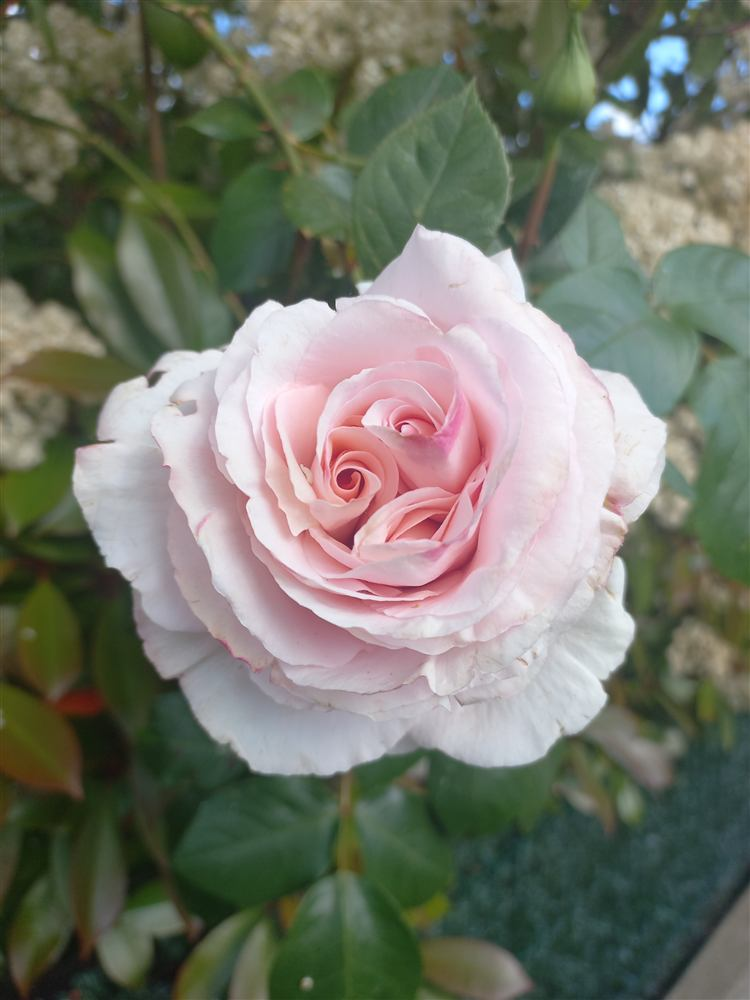
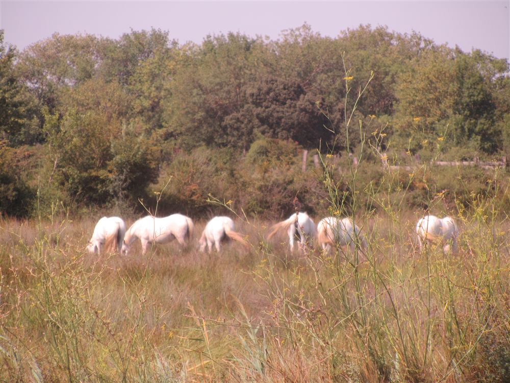
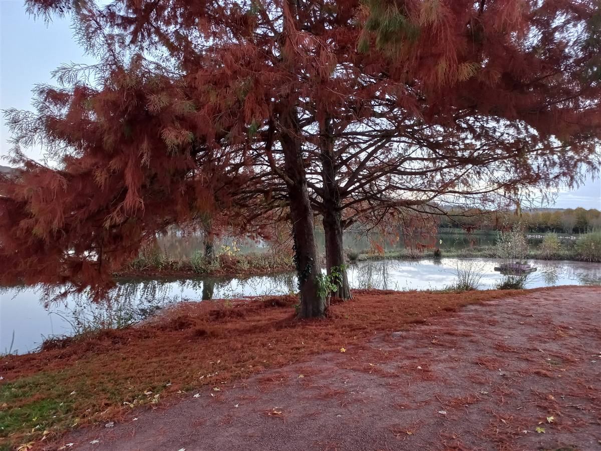
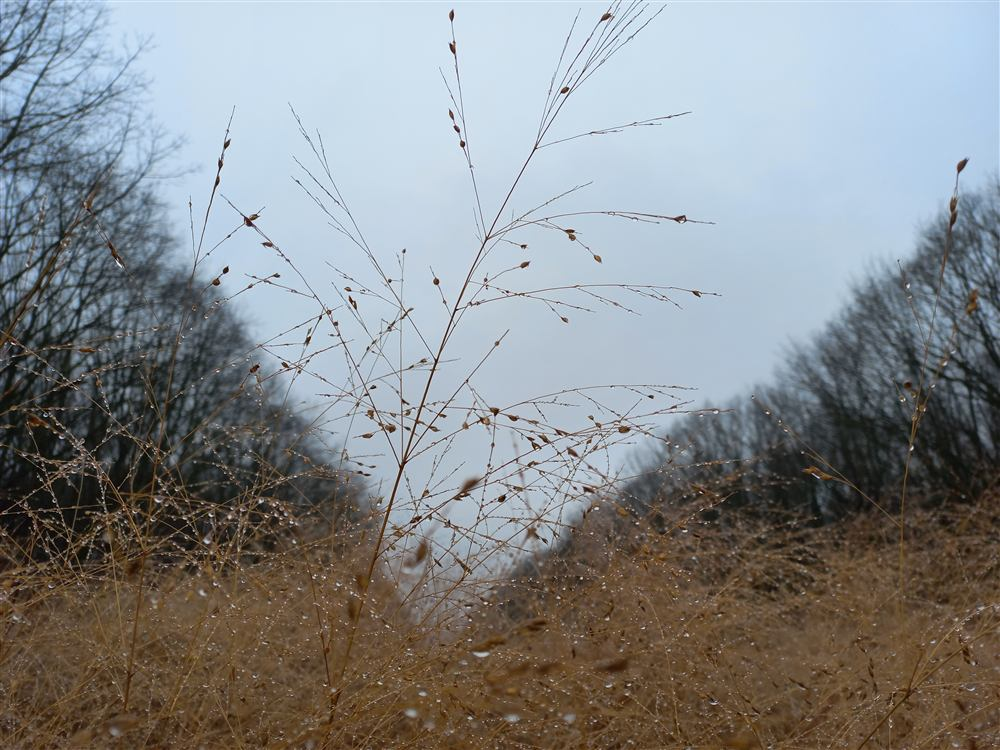
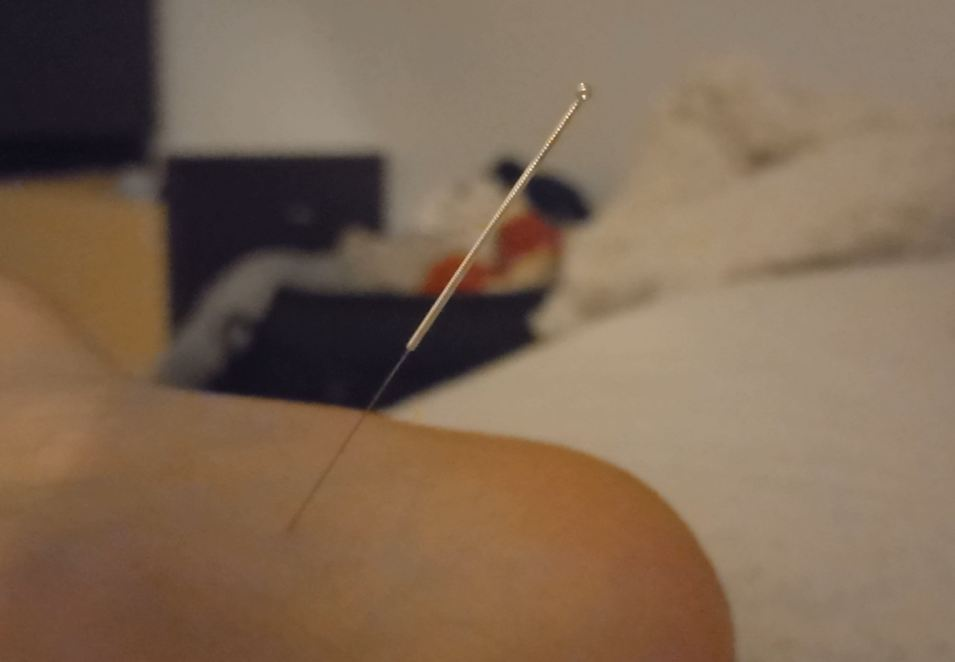
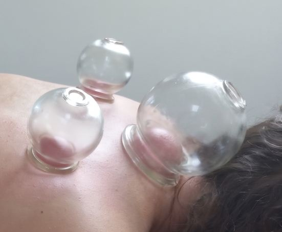

Présentation
Retrouver l'équilibre au rythme de la nature
Formée aux principes de la médecine traditionnelle chinoise, j'accompagne chacun vers un meilleur équilibre physique et énergétique. Tout comme la nature traverse ses saisons, notre corps connaît ses propres cycles : mon rôle est de vous aider à en retrouver l'harmonie, pour plus de vitalité et de sérénité au quotidien.
Au rythme des saisons
Chaque saison porte sa propre énergie, son propre élément




Pratique
Des approches complémentaires au service de votre équilibre
Bilan énergétique
Évaluation globale de votre état énergétique selon les principes du Yin/Yang et des cinq éléments.

Acupuncture
Stimulation de points précis du corps à l'aide d'aiguilles fines pour rétablir la circulation de l'énergie.

Tui Na
Massage traditionnel chinois et techniques complémentaires (ventouses) pour dénouer les tensions et relancer la circulation du Qi.
Contact
- ZoneRégion rouennaise, séance à domicile
- Téléphone06 17 07 13 34
- Emailclemence.troly@gmail.com